23 Sep 2017 | 网易云音乐
在使用网易云音乐听音乐时，在播放界面点击喜欢图标后
在页面右上角会出现一个小鹿从跳圈里出来提示分享音乐
这样不仅引导了用户去分享喜欢的音乐，此动作也增加了应用很大的趣味性
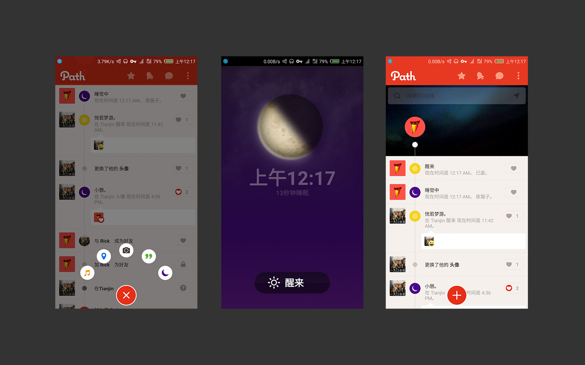
24 Jan 2018 | Path
大家对Path的典型按钮都非常熟悉了
点开按钮里的睡眠小按钮进入睡眠模式
Path中极具情感化设计的内容情节
在睡眠时间线上给于相应的反馈，看来我的睡眠是已废 T_T
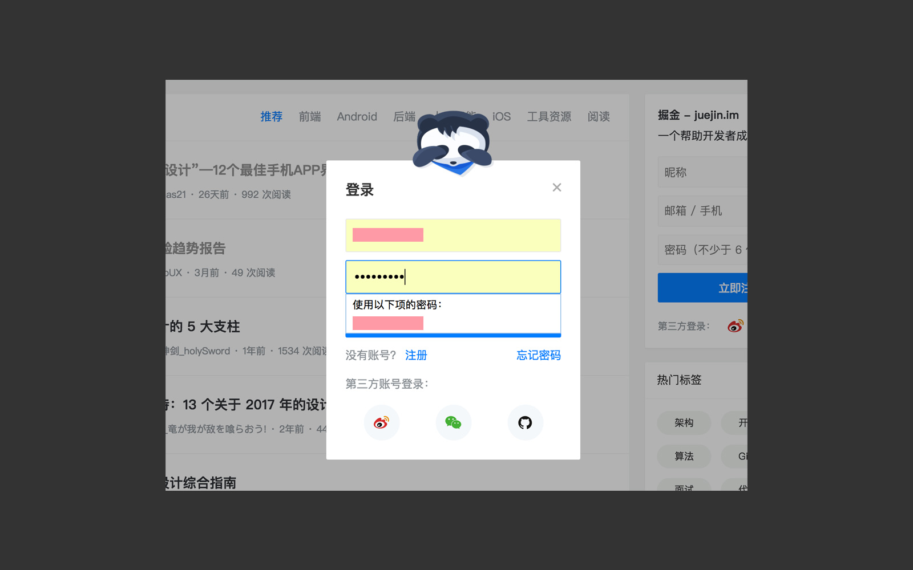
08 Jan 2018 | 掘金登录
掘金，在填写账号时会小熊猫会伸出舌头举起手
如readme一样，在填写密码时小熊猫会捂上眼睛
给用户传递了趣味和安全感受，细节上体现了情感化设计
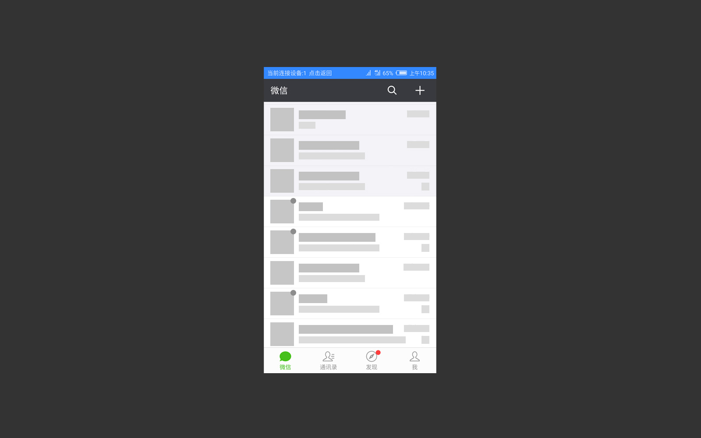
26 Feb 2018 | 微信
微信，在消息列表有个交互形式很多人都不会在意
当消息列表大于一屏时，连续点击微信图标列表的消息会滚动翻页
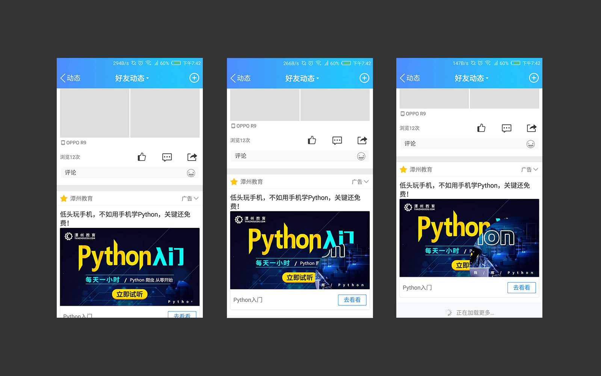
16 Mar 2018 | QQ空间广告
QQ空间广告切换交互不同于之前传统的方式
切换的交互形式是圆形扩散转场动画
切换的速度是根据用户的滑动速度来控制
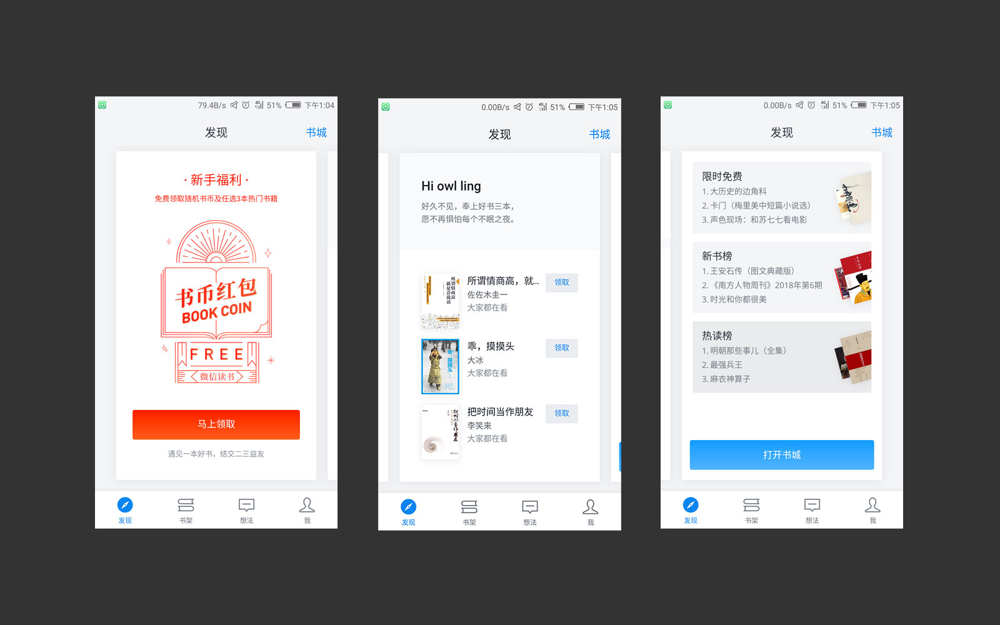
19 Aug 2017 | 微信读书
不说微信读书在设计上界面简洁明了，流行的阴影敢于落实
初次打开微信读书页面时，发现页面的新用户引导
上来就是一个很好看的书币红包卡，接着可以领取即可阅读
由于此页面采用左右滑动交互，最后一页的推荐页面向右继续滑动可刷新
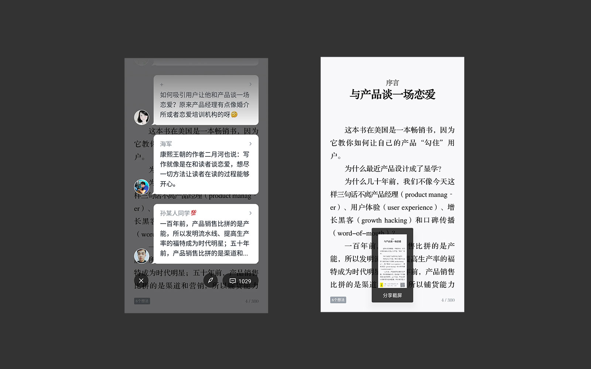
19 Aug 2017 | 微信读书
继续微信读书的阅读模块
在阅读状态，每页都有用户阅读想法供大家交流
在阅读状态下截图会自动生成分享截屏卡片
微信读书 “社交+读书”，很明显的将发现菜单项置于最前
以及阅读排行榜，朋友书单，想法书评等社交模式更为适合年轻一代
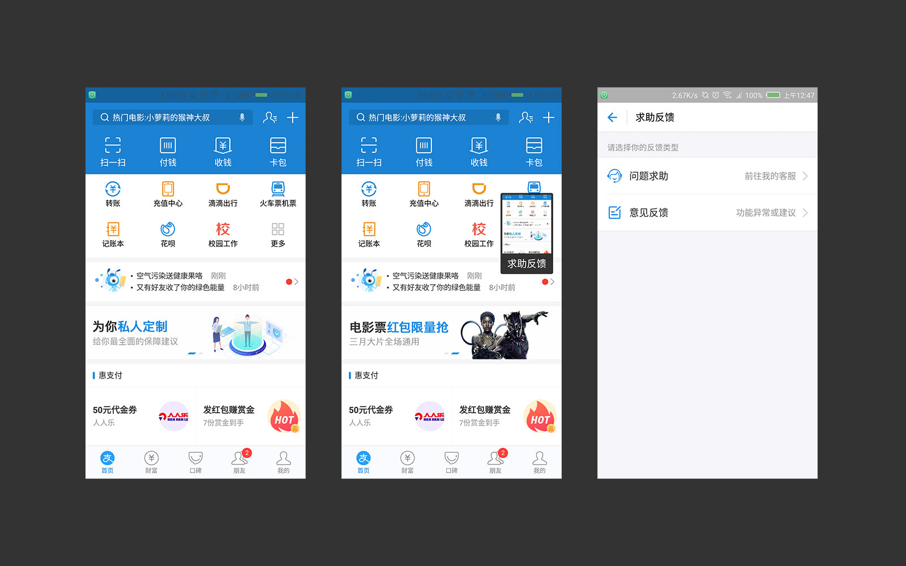
12 Dec 2017 | 支付宝
进入支付宝内进行截屏完成后，会弹出一个截屏求助反馈
这是因为支付宝检测到当前用户在应用内有截屏动作
这个动作会有进行反馈的可能，点击求助反馈能跳转到求助反馈页面
这样一个小小的动作却显得很人性化，更体现出了支付宝设计师们的同理心
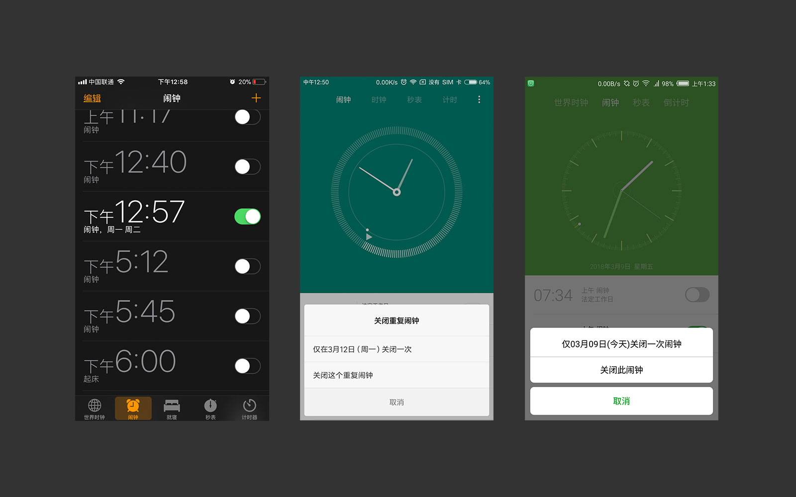
9 Mar 2018 | 闹钟
以上是 iOS闹钟 MIUI闹钟 nubiaUI闹钟 对比
在闹钟进行关闭闹钟时有一个交互细节
iOS闹钟直接关闭，其他平台会有个关闭重复闹钟提醒
这个交互细节不能说谁好谁坏，都有自己的设计理念
iOS直接关闭减少了操作成本符合使用习惯，带关闭提示的同样也显得很友好
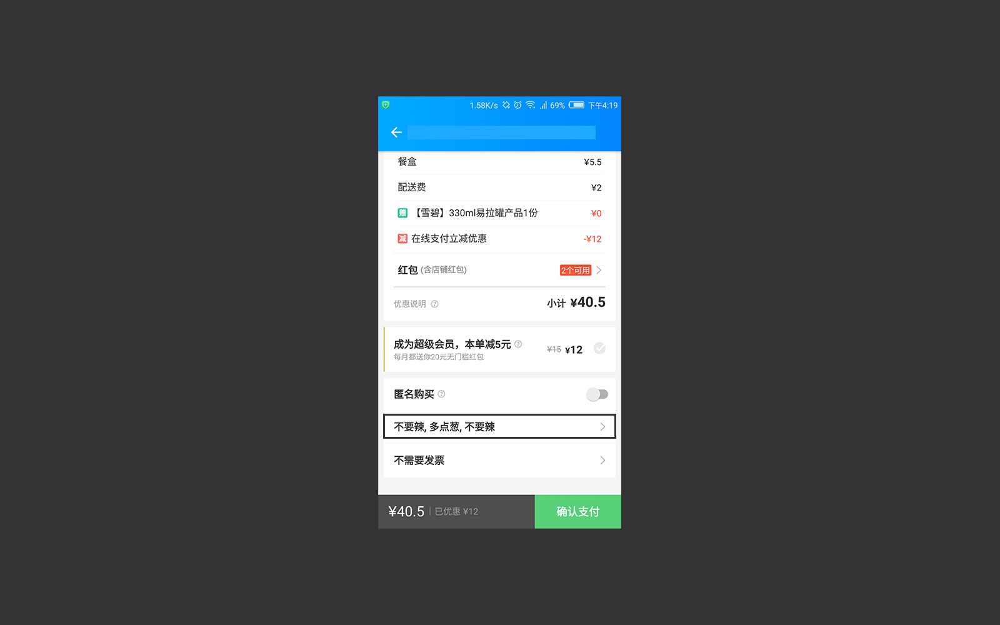
28 Nov 2017 | 饿了么
用饿了么再来一单时，备注会默认为上次填写的备注
这样更人性化，符合人们的饮食行为习惯，减少了用户输入操作成本
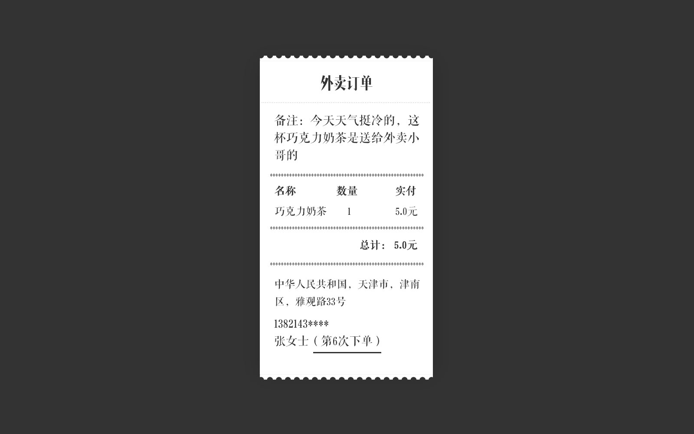
21 Nov 2017 | 外卖订单
外卖订单生成时，店家会得知用户是第几次购买
这条数据反馈了店家和用户的一个购买频度信息
为了留住用户一般对于首单用户店家给的都会很实惠
当然还是有很多店家实事求是依然如故
这样无论是对新用户还是常客都是平等对待
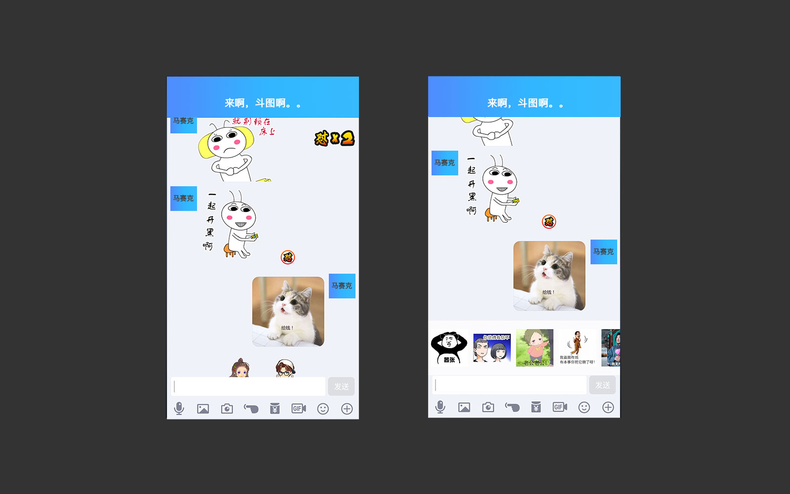
18 Aug 2017 | QQ 怼图模式
QQ斗图除了点击GIF按钮进行斗图之外
当对方连续给你发了三张以上表情图便会出现一个“怼”
点击“怼”便会调出更多的表情图可与对方互怼互动
从emoji到表情包到斗图模式，QQ一直增添着有趣的互动来吸引年轻用户
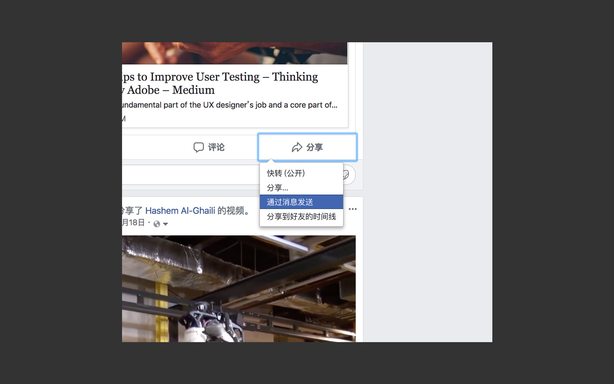
16 Sep 2016 | Facebook
Facebook的分享有四个选项，可以不通方式分享
快转公开无法进行评论，分享即可评论
通过消息发送和分享到好友时间线可单独分享给朋友
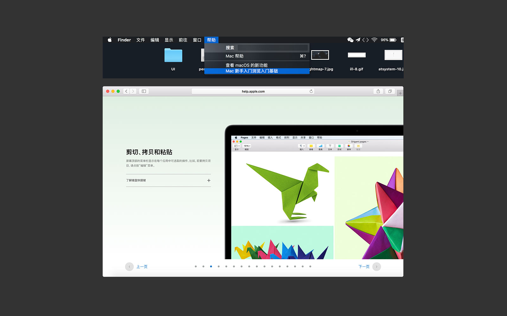
13 May 2016 | Mac 新手入门
虽然大家都知道，但还是想说一下
Mac的新手入门帮助真的显得很友好